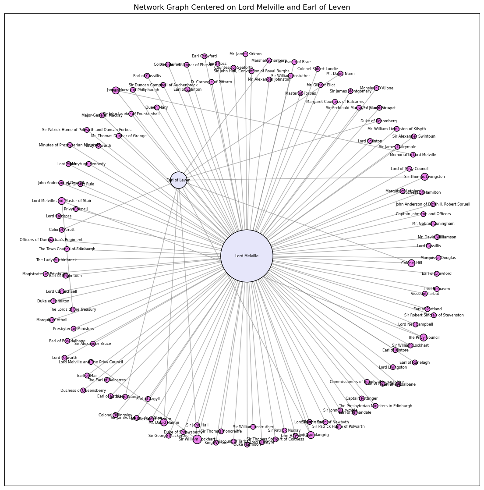
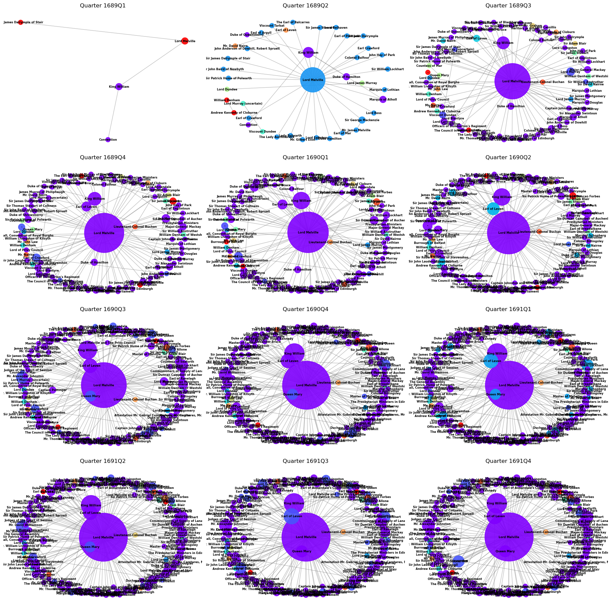
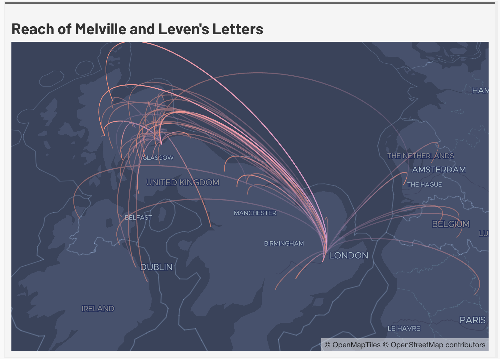
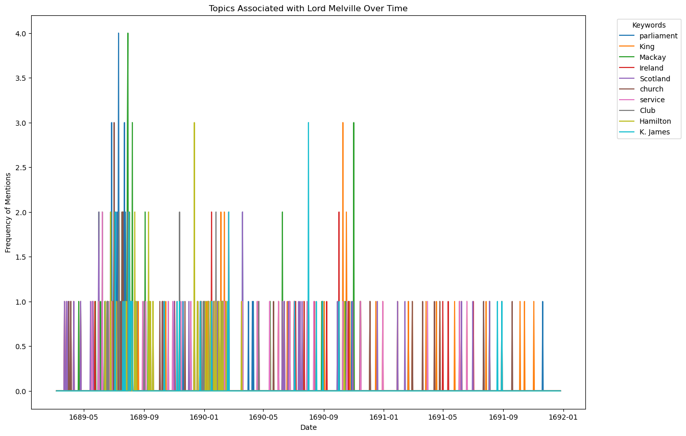
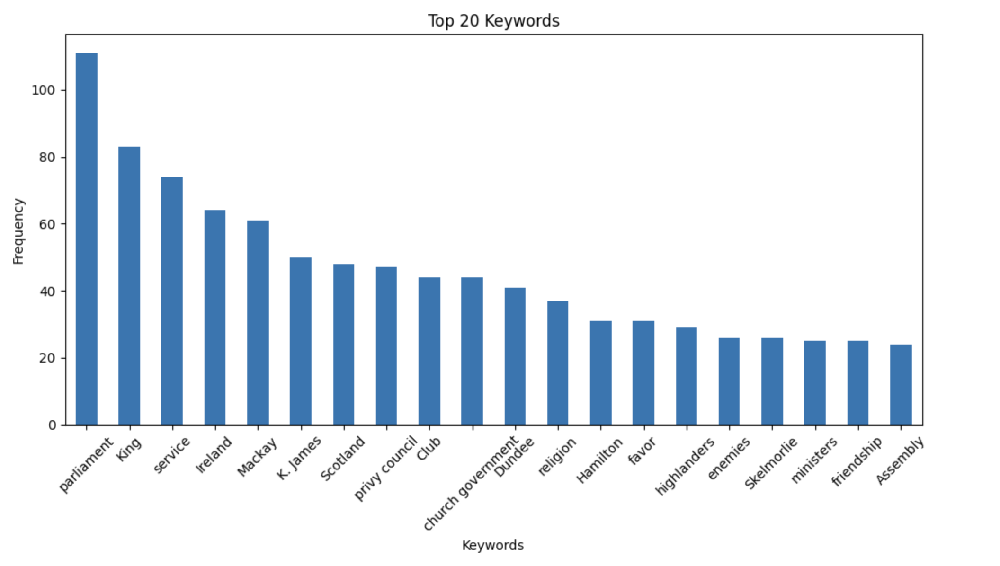
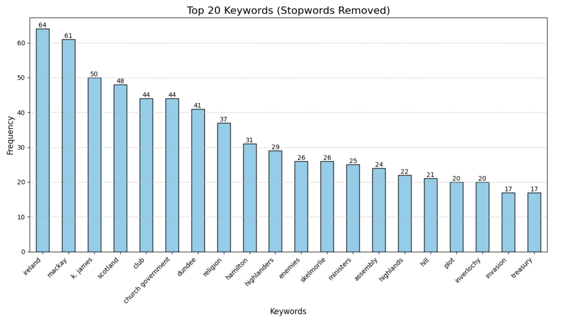

It has been long assumed that William III and II paid little attention to Scotland after the Revolution of 1688-90, but correspondence during the period tells a different story. The Papers of the Leslie Family, the Earls of Leven and Melville, tell a different story, primarily because of both Melville’s and Leven’s place among William’s trusted advisors. Network analysis of 599 letters in the printed collection, and a further 359 extant manuscript documents, exchanged between 1689 and 1691 reveals a dense, flow of correspondence connecting Edinburgh to London to Glasgow — and to the continent — demonstrating that William’s Scottish Secretary of State was one of his most active and informed conduits of political intelligence.
The physical manuscript papers are held at the National Records for Scotland (NRS) in Edinburgh under the Papers of the Leslie Family, Earls of Leven and Melville (GD26, 1200–1936). From this collection, the Leven and Melville Papers are a printed collection of around 599 official communications generated by individuals, civil servants, and officials in the nascent Williamite regime during the Revolution and early 1690s. The printed collection serves as the primary digital surrogates for the manuscript letters. The project made use of both the manuscript and printed collections meaning that each letter was transcribed or verified against the printed edition and assigned structured metadata including sender, recipient, date, and place of origin and destination. Named individuals were disambiguated and classified by role, allegiance, and institutional affiliation, yielding 408 nodes (245 people, 118 places, 45 orgs/groups), 632 edges including 172 letter links from a total of 958 source records. Edge weights were assigned to reflect the volume of correspondence between nodes. The resulting dataset was then analyzed using standard network metrics — degree centrality, betweenness centrality, and clustering coefficients — computed in Python using the NetworkX library, with visualizations produced in D3.js, Gephi, and mapped using Leaflet.js.
Explore the network below and then our interpretations of it.
Degree centrality — the number of direct connections a node has — is the most straightforward indicator of structural importance in a correspondence network, reliably surfacing its dominant hubs. In this collection, Melville has the highest degree centrality in the corpus by a considerable margin, followed by King William, the Privy Council, the Earl of Leven, and William Lockhart, who served as the King's principal legal advisor for Scottish affairs. A notable additional node are letters where the sender is unknown, registers high centrality this reflects both elite epistolary practice and the gaps of a partially surviving archive (because many members of the network were instructed to burn their letters after reading). This corpus is skewed toward Melville and Leven as recipients, partly because more letters received have survived than letters sent; a complete accounting of outgoing correspondence would likely flatten the hierarchy in places. Intercepted letters also introduce anomalies, bringing into the network individuals who were not willing participants in Melville's correspondence circle.
Across the full corpus the project identified 408 nodes (245 people, 118 places, 45 orgs/groups), 632 edges including 172 letter links, each assigned metadata recording allegiance, cabinet position, and connection weight. t confirms that Melville functioned not simply as an administrator but as the primary intelligence node of the Scottish administration — the person through whom nearly all consequential information about Scotland passed on its way to the King. The volume and variety of correspondence flowing to him reflects this: individuals wrote to the Secretary of State to petition for favor, report military developments, relay parliamentary difficulties, and flag threats to public order. That such letters continued into 1691 — when the Jacobite threat was theoretically receding — underscores that Melville remained an active conduit of political and military intelligence well beyond the initial revolutionary crisis. In aggregate, the correspondence also complicates the older historiographical claim that William was indifferent to his northern kingdom; the density of the exchange suggests otherwise. The presence of the Privy Council as a major hub, rather than any single councillor, points to something equally important: collective institutional deliberation coexisted with the intensely personal networks running through Melville's correspondence. Power in the new regime was simultaneously concentrated and distributed.
The quarterly subplot visualizations track the network's evolution from early 1689 through 1691, and the picture that emerges is one of consolidation. Melville received 447 letters across the corpus but sent only 31, a ratio reflecting both his institutional role as a receiver of intelligence and differential survival rates. The directional data suggests his authority derived less from issuing commands than from controlling information — knowing more, sooner, than almost anyone else in the Scottish administration. Network density increases visibly across the subplots, peaking in the fourth quarter of 1690 and remaining high through 1691. The early plots contain nodes that disappear entirely from later ones: the Viscount of Dundee and Lord Murray appear in the network's opening months and then vanish as the Jacobite military campaign collapsed, their disappearance from the correspondence record tracking their disappearance from political relevance. Meanwhile, Melville's cluster of connected nodes grows denser, reflecting the gradual absorption of formerly ambiguous or oppositional figures into the Williamite correspondence network. Following Ruth and Sebastian Ahnerts' arguments about Tudor correspondence networks, the dominant hubs correspond broadly with the institutional and symbolic centers of power — Holyrood Palace, Kensington Palace, Tarbat House — and the growth of Melville's network over time maps not administrative busyness but the consolidation of Williamite power in Scotland itself.1A letter from Sir Thomas Livingston to Melville in June 1691 captures this informational function well: even at a moment when the military situation was supposedly stabilizing, Livingston was still filing intelligence reports, noting the arrival of French men-of-war off the Isle of Skye carrying ammunition, arms, and officers.2



Of the letters in the Leven and Melville corpus, the vast majority record both a place of sending and an intended destination, making geographic analysis unusually comprehensive for a collection of this period. The largest clusters are concentrated in Edinburgh and London, which together account for most of the correspondence traffic. Secondary clusters appear at Tarbat House and Fort William in Scotland. Smaller but analytically significant nodes appear at Dublin and Ballyhara in Ireland, and at Brussels and Gerpines on the continent. The map produced using the Leaflet.js library visualizes both the volume and directionality of this correspondence traffic, with line weights reflecting the frequency of postal exchange between locations and node sizes reflecting the total volume of letters associated with each place.
Mapping the network has different implications. Structural significance is just as important as geographical space. As Ruth and Sebastian Anhert have noted, an individual’s importance to a network can often be defined by their actual geographical position, especially if they are a diplomat.3 Letters let us see large-scale networks over space and time. Of the letters in this corpus the vast majority list their place of sending and intended destination. More than that they show the reaches of one central node in the network. Melville was receiving letters from all over the British Isles as well as the continent. Even though William never set foot in Scotland, the considerable two-way flow of correspondence between Edinburgh and London, combined with the numerous journeys made by officers of state, meant that he had a great deal of information about the situation in Scotland and was able to relay instructions to his Scottish counterparts. The high traffic of post and letters referring to the situation in Scotland suggests that the secretaries stayed in frequent contact with their counterparts in Edinburgh. One of the things that is evident from the graph produced by the Leaflet libraries is that the network expanded more than just Scotland and England, letters in Melville's corpus ranged from Dublin and Ballyhara in Ireland to Brussells and Gerpines on the continent. Distance did not mean disconnection. The Irish nodes reflect both the interception of Jacobite correspondence routed through Ireland and William's own movements before and after the Battle of the Boyne. The continental nodes are the most striking geographic outlier and evidence that Melville’s intelligence network extended beyond the British Isles entirely into the theater of the wider European war against Louis XIV.

Moving into the actual content of the letters, we have calculated a summary of key words for each of the letters represented in the corpus. These key words are a valuable source of information for what individuals were talking about in their letters. Since the letters have been both transcribed and digitized, they are a ripe source for topic modelling and text analysis. Therefore, we can trace the topics and news that was deemed important between correspondents. There were up to seven keywords assigned to each letter and we tracked this over the course of the years 1688 to 1692. We did this over time because often the most common words were associated with the monarchy. This list will not likely lead us to the events happening at the time. The keyword analysis draws on the full transcribed text of the letters in the corpus, with up to seven keywords assigned to each letter based on frequency and significance. The analysis was run twice: once without a stopword list, and once with a custom stopword list removing terms directly related to the monarchy and governance. The two resulting keyword distributions are presented side by side in the visualizations below. Without the stopword list, the six most dominant topics across the corpus are parliament, privy council, king, service, favor, and friendship, terms that reflect the formal epistolary conventions of the period as much as substantive content. Their dominance in raw frequency counts is partly an artifact of the letter format itself: correspondents routinely opened and closed letters with formulaic expressions of loyalty and service to the Secretary and the Crown. With the stopword list applied, this layer of convention is stripped away and a different set of topics surfaces, clustering around specific events and crises: a suspected invasion, Ireland, and the movements of Dundee and the Highland forces.
The most common topic over the course of the period was parliament, which is somewhat unsurprising given the rise of the supremacy of parliament over the monarchy. What this list does tell us is that over the course of the letter exchange period Melville - and his network - were very interested in the events in Scotland and Ireland. We did this analysis by extracting a list of ranked keywords based on frequency in the total number of letters. The contrast between the two keyword distributions is itself analytically significant. The raw list, dominated by parliament and governance terminology, reflects the degree to which the revolutionary period was understood by its participants as a constitutional moment — a time when the relationship between monarch and parliament was actively being renegotiated. That these terms dominate Melville's correspondence is not merely an artifact of convention; it indicates that the Secretary and his network were genuinely and continuously engaged in the politics of governance and appointment at the highest level.
But it is the stopword list that reveals the texture of daily crisis management. Once the formulaic language is removed, what remains are the events that generated the most urgent correspondence traffic: the threat of French-backed invasion, the deteriorating situation in Ireland leading up to the Battle of the Boyne, and the Highland War under Dundee. These were not abstract political concerns — they were active military threats that required constant intelligence gathering, coordination, and response. The keyword distribution tracked over time reinforces this: the topics shift as the crises shift, with Dundee and the Highlands dominating the early period and Ireland becoming more prominent through 1690. Taken together, the keyword analysis confirms what the network structure implies — that Melville's correspondence was not merely administrative paperwork but an active instrument of political and military intelligence in a regime that was, for much of this period, fighting for its survival.

